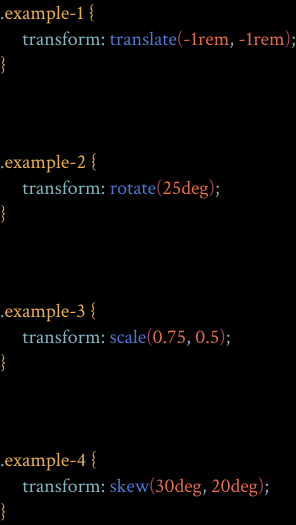
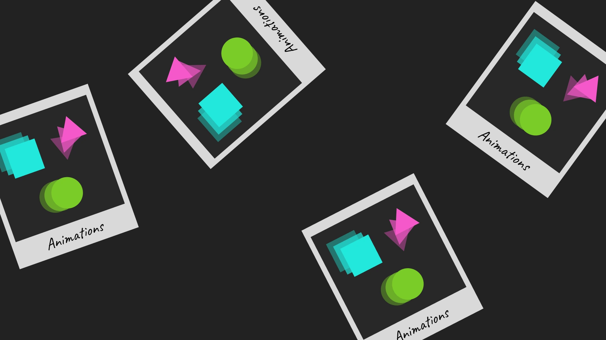

The transform property is a CSS property that allows you to apply various transformations to
an
element. Transformations can include translation (moving), rotation, scaling, and skewing
(tilting).
Translate
Rotate
Scale
Skew
What does it do?
It changes the visual presentation of an element, modifying its size, position, and
orientation. Transforms are applied relative to the element's own content box, without
affecting the layout of the document.
Translate
Rotate
Scale
Skew
Why do you use it?
The transform property is used to create visually appealing effects and animations on web
pages
without changing the underlying structure of the document. It's particularly useful for
creating
interactive and dynamic user interfaces.
Always has been
Where would you use it?
You might use the transform property in various scenarios, including but not limited to:
Creating animated effects on hover or click.
Implementing responsive design by scaling or translating elements based on screen size.
Adjusting the perspective of 3D-transformed elements.
How do you use it?
The transform property is often applied with specific transformation functions. Here's an
example:

Example-1
Example-2
Example-3
Example-4
Pros and Cons
Pros:
CSS Transform is relatively easy to implement and understand, making it accessible
even for beginners.
It does not impact the document layout, sparing other elements from adjustments.
It also leverages hardware acceleration from the GPU for smoother animations and better
performance than JavaScript alternatives.
Cons:
CSS Transform provide 3D capabilities but may lack features for complex effects.
Excessive use of Transform in animations can impact accessibility, making it challenging
for users with disabilities to interact with or understand dynamic elements.
Leveraging hardware acceleration from your GPU is a pro, but it can be a con for older
devices with limited GPU capabilities, impacting performance during complex
transformations.
Transitions
What is it?
What does it do?
Why do you use it?
Where would you use it?
How do you use it?
Pros and Cons
CSS transitions provide a way to animate the change of CSS
properties over time. These properties can include things like width, height, background
color, font size, and more.
CSS transitions make changes to CSS properties gradual and
visually pleasing. When an element's property changes, it smoothly transitions from its
original state to the new state over a specified duration.
CSS transitions are used for several reasons:
Enhance user experience: Transitions make web interactions more intuitive and
engaging.
Add a sense of polish: Smooth transitions add a professional and aesthetically
pleasing
touch to a website.
Improve usability: They provide visual feedback, making it clear to users that
something has changed or happened on the webpage.
CSS transitions can be used in various parts of a web page, such as:
Buttons and links: Adding hover effects, like color changes or scaling.
Navigation menus: Creating dropdown or sliding effects.
Images: Applying hover effects like zooming or fading.
Form elements: Indicating validation errors or providing feedback.
Page transitions: Animating the transition between different sections or pages of a
website.
To use CSS transition, you need to specify the property you want to transition, the
duration of the transition, and
optionally, the timing function that determines the speed of the transition. Here’s an
example:
You can apply them with basic CSS, no need for complicated JavaScript code.
Most modern browsers support it, making sure users have a consistent experience on
different devices.
You can use transitions on things like hover or focus, making your website
more
interactive
and engaging for users.
Cons:
It features basic timing options like ease-in, ease-out, but may not handle
advanced
or
custom timing like JavaScript animations can.
Can be tricky to delay the beginning or time sequences precisely using only CSS
transitions.
Animating big or complicated elements can slow things down because the browser has
to
deal
with a lot of rendering

Animations
What is it?
CSS animation is a feature of CSS that allows us to animate a change in one or more style
properties of an element, as well as control various aspects of the animation.
What does it do?
CSS animation is quite similar to CSS transition, but CSS animation can define every
single
frame
and do a more complex display than CSS transition.
Why do you use it?
CSS is often the best choice for basic animations like hover effects, transitions,
and
small, non-interactive animations.
CSS animations are generally smoother and more efficient, making them ideal for
performance-critical scenarios.
And when you're designing responsive websites, CSS animations adapt to different
screen
sizes seamlessly.
Where would you use it?
Animation is an effective way to hold attention and delight viewers on our website. We
can
use
it on like: Mouse Hover Transition Effect, animated Submit Button, simple Loading
Spinners
to
kill time during page loads, adding some extra flair to a landing page.inspiration
How do you use it?
We only need to define two parts:
(1) The beginning and end of the animation
(2) The way the animation transitions.
The animation properties
Default values / other values
animation-name
Specifies the name of the @keyframes at-rule describing an animation's
keyframes.
none
animation-duration
Specifies the length of time in which an animation completes one cycle.
0 / 2s / 20ms …
animation-delay
Specifies the delay between an element loading and the start of an
animation
sequence and whether the animation should start immediately from its
beginning
or partway through the animation.
0 / 2s / 20ms / -1s…
animation-iteration-count
Specifies the number of times an animation should repeat.
1 / infinite
animation-timing-function
Specifies how an animation transitions through keyframes by establishing
acceleration curves.